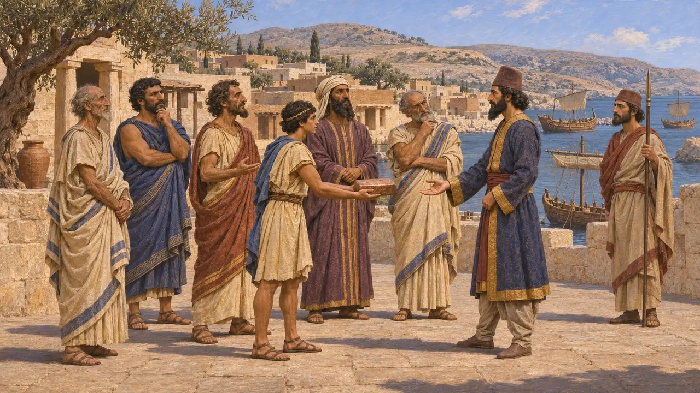
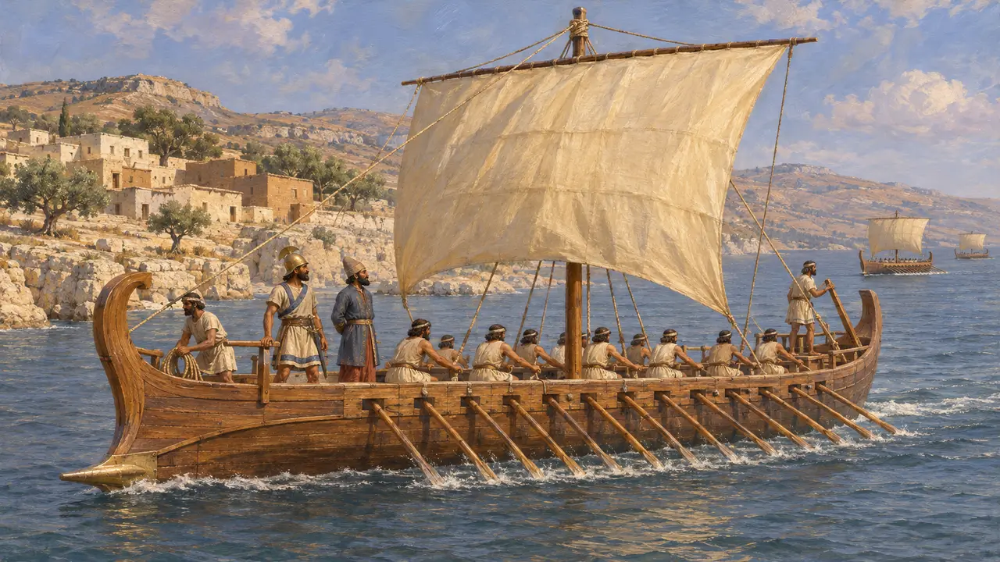
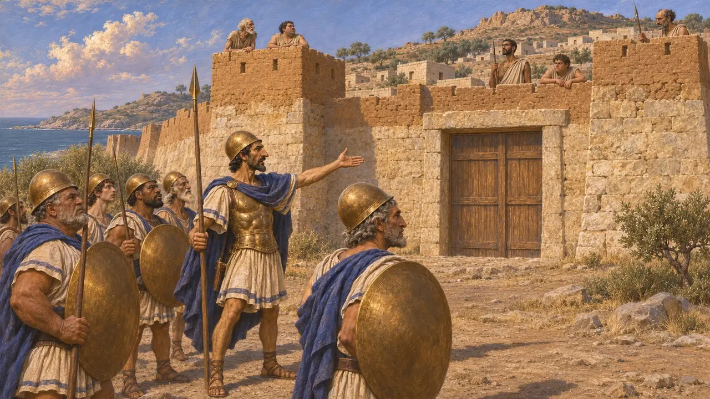
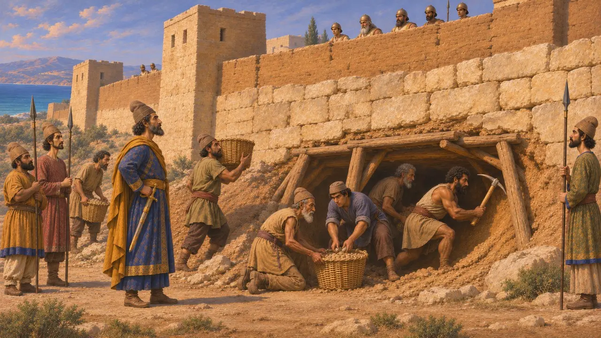
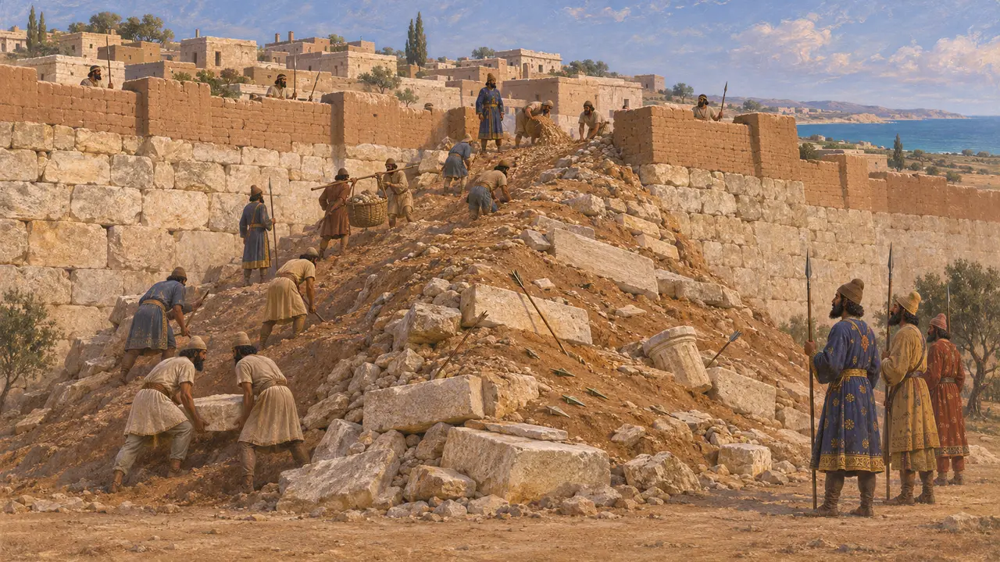
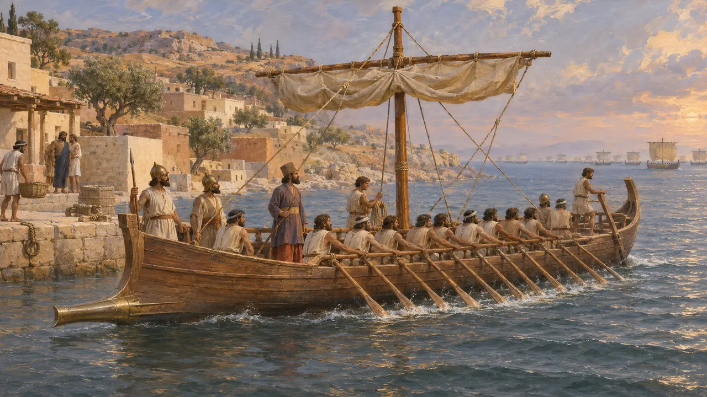

قبرص
جزيرة النحاس والممالك الصغيرة في شرق البحر المتوسط، من القرن السادس إلى القرن الخامس ق.م
كانت قبرص جزيرة تضم مدنًا يونانية وفينيقية، لكل منها ملكها الخاص، وكانت غنية بالنحاس والخشب. وقد آلت إلى الحكم الفارسي في عهد قمبيز، وفي عام 498 ق.م انضمت معظم مدنها إلى الثورة الأيونية بقيادة أونيسيلوس السلاميسي. وسحق الفرس الانتفاضة في غضون عام تقريبًا.
في اللعبة: ليس لقبرص مرحلة خاصة بها ولا آلية لعب خاصة بها. تُذكر في اللعبة ضمن مقالات الأحداث عن ثورة قبرص وانتفاضة أونيسيلوس، حيث يُوصف الحصار على بافوس.

جزيرة الممالك الصغيرة
رواية قديمةيصف هيرودوت قبرص بأنها مقسَّمة بين عدة ملوك، وفيها مدن يونانية ومستوطنة فينيقية في أماثوس. ويذكر أن أماسيس ملك مصر كان قد فتح الجزيرة قبل ذلك، وأن القبارصة سلّموا أنفسهم لقمبيز حين زحف على مصر. ويعدّهم ضمن أقاليم الجزية في عهد داريوس، مع الفينيقيين والسوريين.
Herodotus 2.182; 3.19; 3.91

قبرص في الأسطول الفارسي
رواية قديمةيذكر هيرودوت أن قبرص زوّدت قمبيز بالسفن في حملته على مصر، وأن القبارصة خدموا مرة أخرى في أسطول خشايارشا. ويقدّر عددها بـ150 سفينة، وهو رقم من عنده وربما كان مبالغًا فيه. ويبدو أن الحكم الفارسي أبقى الملوك المحليين في مواضعهم، لكن المصادر لا تقول إلا القليل عن شروط ذلك.
Herodotus 3.19; 7.90


الرد الفارسي
رواية قديمةيقول هيرودوت إن جيشًا فارسيًا بقيادة أرتيبيوس عبر من قيليقية، بينما جاء أيضًا أسطول فينيقي. هزم الأيونيون الفينيقيين في البحر، لكن في البر قُتل أونيسيلوس وانحازت المركبات السلاميسية وملك كوريون إلى الجانب الآخر. ثم حاصر الفرس المدن المتبقية، وصمدت سولي نحو خمسة أشهر قبل أن تسقط بالنقب.
Herodotus 5.108-5.115

المنحدر الترابي في بافوس
متنازع عليهكشفت التنقيبات في بالايبافوس عن منحدر حصار ضخم أُقيم عند سور المدينة، بُني جزئيًا من حجارة أُخذت من الأحرام المجاورة، ويحتوي على أسلحة كثيرة. ويربطه معظم الباحثين بهجوم فارسي في أثناء الثورة التي نحو عام 498 ق.م، لكن تاريخه وتفاصيل الهجوم موضع جدل. ولا يصف هيرودوت هذا الحصار، ولذلك يُعدّ المنحدر الدليل الرئيس عليه.
V. Karageorghis and F. G. Maier, Paphos: History and Archaeology, 1984

بعد ذلك
رواية قديمةيقول هيرودوت إن قبرص استُعبدت من جديد بعد عام واحد من الحرية. وخدمت السفن القبرصية لاحقاً في أسطول خشايارشا. ولا يُعرف إلا القليل عن الحكم الفارسي هناك بعد 497 ق.م.
Herodotus 5.116; 7.90
المصادر
- Herodotus 5.104-5.116
- Herodotus 3.19
- Herodotus 7.90
- V. Karageorghis and F. G. Maier, Paphos: History and Archaeology, 1984
- P. Briant, From Cyrus to Alexander, 2002